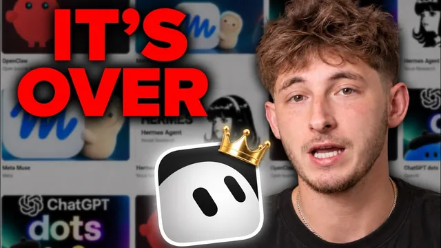

고민할 것 없다, 승자는 Grok Bot이다

원본 영상 보기 →
- 항상 켜진 AI 직원의 진입장벽이 서버 관리에서 '앱 설치'로 내려왔어요
- 봇의 성패는 직무 설명 한 문장에 달려 있어요
- '나'를 알려주는 문서와 '내 고객'을 알려주는 CRM은 별개예요
한 줄 요약
SpaceX가 내놓은 AI 직원 앱 Grokbot을 들여다봅니다. 클라우드 컴퓨터에서 AI 직원이 24시간 일하게 해주는 서비스인데, OpenClaw와 Hermes가 보여준 "항상 켜진 에이전트"를 비개발자도 몇 분 만에 쓸 수 있게 만들었어요. 가격도 월 20달러 수준까지 내려왔습니다.
전체 내용 정리
이름과 직함, 직무 설명을 가진 AI 직원을 고용합니다
각 봇은 이름, 직함, 직무 설명 세 가지로 구성되고 자기만의 클라우드 환경에서 일해요. 클라우드 컴퓨터는 내 도구·계정과 연결된 채로, 노트북을 꺼도 계속 일합니다.
한 번 맡긴 일을 다음 주에도 처리할 수 있고, 휴대폰 앱과도 동기화돼서 외출 중에 지시하고 나중에 결과를 확인할 수 있어요. 출시 때 월 200달러 안팎이던 가격은 지금 월 20달러 수준으로 내려왔습니다.
화면은 iMessage와 비슷해요. 왼쪽의 각 행이 봇 하나입니다. 직무 설명은 그냥 설명문이 아니라, 다른 봇에게 메시지를 어떻게 넘길지 정하는 중요한 요소예요.
봇 뒤에는 브라우저·파일 시스템·터미널이 있는 실제 컴퓨터 화면이 있습니다. 마우스 커서가 움직이며 일하는 모습을 볼 수 있고, 사용자가 원격 데스크톱처럼 직접 조작할 수도 있어요. 결과물도 채팅창의 긴 글이 아니라 Gmail 초안이나 Google Drive의 완성된 스프레드시트처럼 제자리에 저장됩니다.
봇을 움직이는 방법은 세 가지예요
- 채팅하듯 직접 메시지를 보내기
- 평일 오전 8시나 Slack에 새 메시지가 올 때처럼 일정·이벤트로 자동 실행
- 다른 봇이 보내는 알림
세 번째가 가장 중요해요. 봇끼리 협업할 수 있게 해주는 방식이거든요.
OpenClaw → Hermes → Grokbot으로 이어진 흐름
Claude Code와 Codex는 훌륭하지만 사용자가 앉아서 일할 때만 작동합니다. 노트북을 닫으면 멈춰요.
그다음 Peter Steinberger가 만든 오픈소스 OpenClaw가 나왔습니다. 항상 켜져 있고 기억하는 에이전트로, GitHub 역사상 가장 빠르게 성장해서 약 40만 스타에 가까워졌어요. Hermes Agent는 호스팅까지 맡아서 텔레그램으로 메시지만 보내면 외부 서버에서 돌아갔고요.
그런데 일반인에게는 여전히 벽이 있었습니다. 서버 임대나 Mac Mini, 도구별 API 키, 갱신 때마다 끊기는 로그인 정보를 직접 관리해야 했거든요. 사실상 IT 부서가 돼야 했어요.
Grokbot은 더 똑똑한 모델이 아닙니다. 같은 "항상 켜진" 개념을, 컴퓨터가 클라우드에서 돌아가게 해서 마무리한 제품이에요. 로그인 정보도 한 곳에만 있으면 됩니다.
출시 과정에 재밌는 이야기가 있어요
5월 초 SpaceX와 xAI가 합병을 마쳤고, 6월 SpaceX 상장 며칠 뒤에 Cursor를 600억 달러에 인수한다고 발표했습니다. 전액 주식 거래로, 스타트업 인수 사상 최대 규모예요.
앱 스토어의 판매자가 Cursor의 법적 이름인 AnySphere로 표시되는 걸 보면, Grokbot은 Cursor 팀 또는 Cursor의 클라우드 인프라가 만든 것으로 보입니다. xAI는 Grok 모델과 이름을 가져왔고요.
여기가 흥미로워요. 8월 11일에 앱이 출시됐는데 인수가 법적으로 완료된 건 3일 뒤였습니다. xAI가 3일간 아직 소유하지 않은 회사의 제품을 판 셈이죠. 그래서 코드 에디터 구독 안에 Grok 제품이 들어 있고, 가격이 내려간 이유이기도 합니다.
지금은 Cursor Pro 20달러, Super Grok 30달러에 포함되며 무료 체험도 제한적으로 있어요. 100달러 플랜과 팀 플랜은 같은 제품에 사용 한도만 큽니다.
첫 번째 봇은 '받은편지함 데스크'로
새 봇을 만들어 이름을 정하고 직무 설명을 붙여넣습니다. 예시는 이래요.
평일 오전 8시에 이메일만 읽고, 마지막 실행 이후 온 메일을 긴급·답장 가능 등으로 분류하고, 답할 수 있는 메일의 초안을 쓰며, 직접 확인이 필요한 소수를 표시하되 아무것도 발송하지 않는다.
봇이 질문을 던지면 음성 받아쓰기로 답할 수도 있어요. 봇은 Gmail 접근을 확인하고 평일 오전 8시 루틴을 등록합니다.
컴퓨터는 계정당 하나입니다
많은 영상이 "봇마다 컴퓨터가 있다"고 하는데, 이건 틀렸다고 해요.
계정당 컴퓨터는 하나입니다. 봇마다 자기 화면을 가져서 병렬로 일하지만, 파일·브라우저·로그인은 공유돼요. 그래서 한 번만 로그인하면 모든 봇이 쓸 수 있고, 설정이 주말이 아니라 몇 분이면 끝납니다. 로그인이 필요하면 화면을 보여 주거나, 채팅이 아닌 보안 양식으로 비밀번호를 요청해요.
모든 봇이 한 브라우저를 공유하니까 규칙이 중요합니다. API가 있는 앱은 오른쪽 위의 플러그인(Slack·Gmail·ClickUp·Drive·Notion·Google Calendar 등)을 쓰는 게 AI가 화면을 조작하는 것보다 싸고 빨라요.
다른 사용자의 봇을 구경하고 가져오는 기능도 있습니다. 예를 들어 Reddit·Hacker News·뉴스에서 내 이름이나 브랜드, URL 언급을 감시하다가 임계치를 넘으면 요약을 보내는 봇을 가져올 수 있어요.
먼저 내 회사를 알려 주세요
회사가 무엇을 파는지, 누구에게 파는지, 어디에 콘텐츠를 올리는지를 음성으로 말하면 봇이 인터뷰를 진행합니다. ChatGPT나 Claude에 "나에 대해 아는 모든 것을 정리해 줘"라고 시켜서 붙여넣거나, 기존 CLAUDE.md를 넣어도 돼요.
어떤 메일이 긴급인지, 어떤 어조로 쓸지도 이 문서에 담기고, 이 문서는 어디서나 따라옵니다.
다만 한계가 있어요. 이 문서는 나와 회사 이야기뿐입니다. 어떤 잠재 고객과 지난 통화에서 무슨 얘기를 했고 누가 견적을 기다리는지는 담기지 않아요. 대부분의 회사가 그 정보를 받은편지함과 스프레드시트에 흩어 두기 때문입니다.
영상 스폰서인 HubSpot의 무료 CRM은 연락처마다 이메일·메모·통화 기록을 한곳에 모으고, 딜 보드에서 영업 단계별로 누가 나를 기다리는지 보여 줍니다. 정리하면 이렇습니다. 연락처 문서는 봇에게 '나'를 알려주고, CRM은 '내가 함께 일하는 사람'을 추적하는 역할이에요.
한 봇에서 시작해 '비서실장 봇' 구조로 넓히세요
두 번째 봇은 직접 만들지 말고 첫 봇에게 "고용"하게 하는 걸 권합니다.
예를 들어 매일 아침 AI 업계 동향을 한 페이지로 정리해 Drive에 저장하는 리서치 봇을 만들라고 시키면, 봇이 짧은 인터뷰로 "내 사업에 중요한 것"의 범위를 확인해요.
봇이 늘어나면 한 봇을 비서실장으로 정합니다. 일을 올바른 봇에 넘기고 결과를 돌려받게 하는 거죠. 그 아래에는 한 문장으로 쓴 직무를 가진 전문가 봇들을 둡니다.
메모리는 두 종류예요. 봇 개인 메모와, 모든 봇이 읽는 공유 메모입니다. 업무 관련 학습은 공유 쪽에 쌓여서, 다섯 번째 봇도 첫날부터 앞선 봇들이 배운 걸 압니다.
가장 흔한 실수는 첫 주에 봇 15개를 만들어 모든 업무를 한꺼번에 자동화하려는 거예요. 성공하는 구성은 한 봇이 한 업무를 잘하는 데서 시작합니다.
여러 봇이 필요한 일은 채널을 만들어 한 방에 넣고 메시지 하나를 보내면 서로의 직무를 이해하고 일을 나눠요. Claude Code나 Codex의 스킬 파일을 끌어다 가르칠 수도 있고, MCP 서버도 같은 방식으로 연결됩니다.
사용 한도는 반드시 설정하세요
사용량은 주간 한도이고 Grok·Cursor의 일반 사용과는 별개입니다. 정확한 크기는 공개되지 않았어요. 약 60일 써 본 결과 월 100달러 플랜에서도 한도를 다 쓰는 일은 드물었다고 합니다(Claude Code·Codex와 병행하면서요). 저렴한 플랜으로 시작해서 필요하면 올리라고 권해요.
한도를 아끼는 규칙은 세 가지입니다.
- 긴 지침은 채팅이 아니라 파일에 저장하세요. 대화 기록은 초기화되지 않고 메시지마다 전체를 다시 불러와서 소모가 큽니다.
- 루틴은 5분마다가 아니라 시간별이나 일별로 돌리세요.
- 월 한도를 직접 정하세요. 지출 한도가 따로 없으므로 설정의 사용량 및 결제에서 온디맨드 사용을 끄면 됩니다.
한도가 소진되면 봇은 완전히 멈춥니다. 그래서 예상 밖 청구서는 없어요. 학습용 데이터 사용은 가입할 때 체크박스로 "아니요"를 고를 수 있고, 고객사 봇은 고객 계정마다 하나씩 따로 만들라고 권합니다.
Claude Code는 책상 앞에서, Grokbot은 자리를 비웠을 때
권장 운영은 이렇습니다. 봇 하나에 업무 하나를 주고, 발송·지출·법률·고객에게 보이는 모든 것은 사람이 검토하고 승인하세요.
월 20달러로 시작하는 설정은 처음의 200달러 플랜과 완전히 다른 결정이라고 평가합니다. Claude Code에 익숙하고 기술 경험이 있다면 계속 써도 되지만, Grokbot은 대중을 겨냥해서 아무것도 커스터마이즈하지 않고 정보만 주면 되는 쉬움이 장점이에요.
클라우드 컴퓨터는 AI를 쓰기 시작한 이후 가장 좋았던 것 중 하나라며 대부분에게 추천합니다.
핵심 인사이트
- 항상 켜진 AI 직원의 진입장벽이 서버 관리에서 '앱 설치'로 내려왔어요: OpenClaw와 Hermes는 서버·API 키·끊기는 로그인을 직접 관리해야 했는데, 클라우드 컴퓨터가 그걸 다 흡수했습니다.
- 봇의 성패는 직무 설명 한 문장에 달려 있어요: 직무 설명이 봇끼리 일을 넘기는 기준이라, 한 봇에 한 업무를 명확하게 쓰는 게 확장의 전제입니다.
- '나'를 알려주는 문서와 '내 고객'을 알려주는 CRM은 별개예요: 회사 소개 문서만으로는 고객별 맥락을 알 수 없어서 별도 기록이 필요합니다.
- 가격과 한도 관리가 운영 성패를 가릅니다: 월 20~100달러라도 긴 지침 파일화, 루틴 주기 조정, 월 한도 설정이 없으면 한도 소진이나 중단을 겪어요.
- 발송·지출·고객 노출은 사람이 승인하는 구조를 유지하세요: 자동화 범위를 읽기·분류·초안까지로 제한하는 게 안전한 시작점입니다.
오늘 당장 해볼 것
- 매일 아침 반복하는 업무 한 가지를 골라 "누가·언제·무엇을 읽고·무엇을 하지 않는지"를 한 문장 직무 설명으로 써 보세요. 밤사이 온 이메일 분류 같은 거면 충분합니다.
- 자주 쓰는 AI에 "나와 내 사업에 대해 아는 것을 모두 정리해 줘"라고 요청해 회사 소개 문서를 만들어 저장해 두세요. 어떤 도구를 쓰든 따라다니는 자산이 됩니다.
- 지금 쓰거나 검토 중인 AI 에이전트 서비스에서 월 사용 한도와 자동 결제를 확인하고, 초과 결제가 되지 않게 한도를 걸어 두세요.
- 고객 정보를 받은편지함과 스프레드시트에 흩어 두고 있다면, 잠재 고객 한 명의 최근 대화와 다음 할 일을 한곳에 모아 적어 보세요. 그 한 명이 기준이 됩니다.